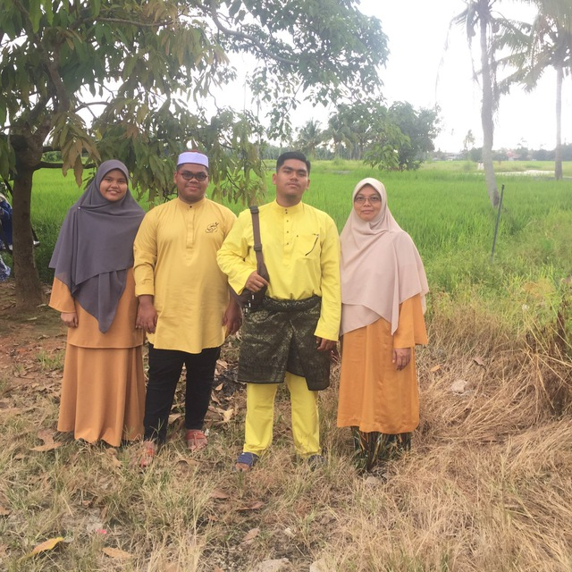
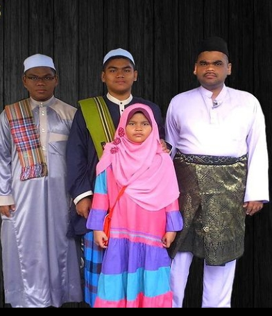
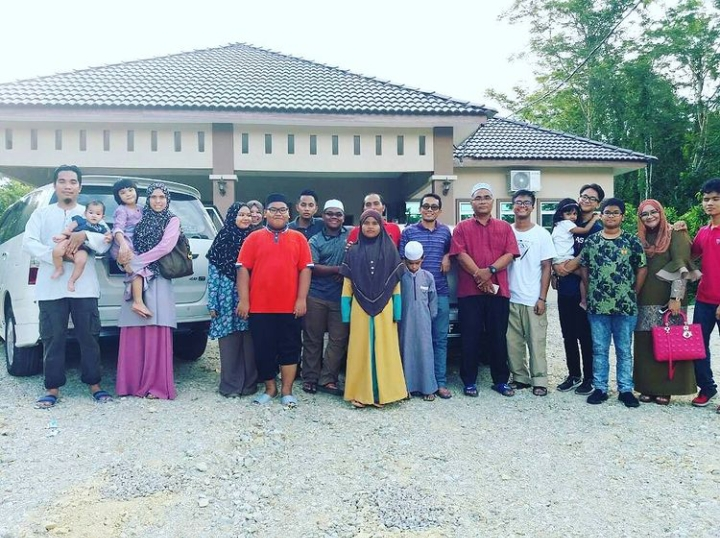

This is my family. A proof of love between my mom and dad. This is a picture of celebrating eid mubarak on 2019. Sadly this year of 2020, we does not have any photos of eid mubarak 'cause we can't go back to our village which located in Parit Mat Aris, Tanah Kebun, Parit Buntar and need to stay at our home at Gerik, Perak as instructed by the government to break the chain of Covid-19 infection among Malaysian. By doing this, we understand and we does not want to hurt any of my big family members. We want them to live in peace and keep healthy.
|  | ||
| My Family | Name | Relationship |
|---|---|---|
| Khir Azman | Father | |
| Noor Aizah | Mother | |
| Khairi Amirul | Brother | |
| Khairi Azamuddin | Me | |
| Siti Umairah | lil' Sister | |
This is my current family as for 2020. I have my mom, my elder brother as well as my lil' sister. My dad had passed away in 2017 cause of multiorgan failure. Losing him such a burden for my mom to raise up her 3 children. We also being reminded to always save in expenditure and saving money for the future. And this is picture of eid mubarak with my dad. I Just miss him so much. God blessed you dad!
Anyway, after 3-4 months from the date that my dad gone, my family rise up and do not want to be sad anymore. We do live in happiness back and my big family came to my house give moral support. They give us spirit to continue the life and don't forget that we're not alone in this world. I still have a big family that so care about my family.
Here's video of my big family on my mom's side that made by me to lock and keep our memories together. This video was produced back then in 2015.